35 Part of a whole
How a whole splits into parts: grouped and stacked bars, treemaps, donuts and pies, circle packing, sunbursts, waffles, Venn diagrams and UpSet plots (the R Graph Gallery part-of-a-whole pages, the data-to-viz sunburst and the pie caveat).
Not here: dendrograms (plot/dendrogram) and the sunburst of flows belong to the Flow chapter.
(ns use-cases.part-of-a-whole
(:require [clojure2d.color :as c]
[fastmath.core :as m]
[fastmath.random :as r]
[cljplot2.chart :as chart]
[cljplot2.core :as plot]
[cljplot2.theme :as theme]
[cljplot2.data.sets :as sets]
[notebook-utils :as nu]))(def world
"World population by region, subregion and country - the countries with a known population."
(filterv :population (nu/dataset :world-population)))| region | subregion | country | population |
|---|---|---|---|
| Asia | Southern Asia | Afghanistan | 25500100 |
| Europe | Northern Europe | Åland Islands | 28502 |
| Europe | Southern Europe | Albania | 2821977 |
| Africa | Northern Africa | Algeria | 37900000 |
| Oceania | Polynesia | American Samoa | 55519 |
| Europe | Southern Europe | Andorra | 76246 |
| Africa | Middle Africa | Angola | 20609294 |
| Americas | Caribbean | Anguilla | 13452 |
| Americas | Caribbean | Antigua and Barbuda | 86295 |
| Americas | South America | Argentina | 40117096 |
| Asia | Western Asia | Armenia | 3024100 |
| Americas | Caribbean | Aruba | 101484 |
| Oceania | Australia and New Zealand | Australia | 23254142 |
| Europe | Western Europe | Austria | 8501502 |
| Asia | Western Asia | Azerbaijan | 9235100 |
| Asia | Western Asia | Bahrain | 1234571 |
| Asia | Southern Asia | Bangladesh | 152518015 |
| Americas | Caribbean | Barbados | 274200 |
| Europe | Eastern Europe | Belarus | 9465500 |
| Europe | Western Europe | Belgium | 11175653 |
| Americas | Central America | Belize | 312971 |
| Africa | Western Africa | Benin | 10323000 |
| Americas | Northern America | Bermuda | 64237 |
| Asia | Southern Asia | Bhutan | 740990 |
| Americas | South America | Bolivia | 10027254 |
| Europe | Southern Europe | Bosnia and Herzegovina | 3791622 |
| Africa | Southern Africa | Botswana | 2024904 |
| Americas | South America | Brazil | 201032714 |
| Americas | Caribbean | British Virgin Islands | 29537 |
| Asia | South-Eastern Asia | Brunei | 393162 |
| Europe | Eastern Europe | Bulgaria | 7282041 |
| Africa | Western Africa | Burkina Faso | 17322796 |
| Africa | Eastern Africa | Burundi | 10163000 |
| Asia | South-Eastern Asia | Cambodia | 15135000 |
| Africa | Middle Africa | Cameroon | 20386799 |
| Americas | Northern America | Canada | 35158304 |
| Africa | Western Africa | Cape Verde | 491875 |
| Americas | Caribbean | Cayman Islands | 55456 |
| Africa | Middle Africa | Central African Republic | 4616000 |
| Africa | Middle Africa | Chad | 12825000 |
| Americas | South America | Chile | 16634603 |
| Asia | Eastern Asia | China | 1361170000 |
| Oceania | Australia and New Zealand | Christmas Island | 2072 |
| Oceania | Australia and New Zealand | Cocos (Keeling) Islands | 550 |
| Americas | South America | Colombia | 47330000 |
| Africa | Eastern Africa | Comoros | 724300 |
| Africa | Middle Africa | Republic of the Congo | 4448000 |
| Africa | Middle Africa | Democratic Republic of the Congo | 67514000 |
| Oceania | Polynesia | Cook Islands | 14974 |
| Americas | Central America | Costa Rica | 4667096 |
| Europe | Southern Europe | Croatia | 4290612 |
| Americas | Caribbean | Cuba | 11167325 |
| Americas | Caribbean | Curaçao | 150563 |
| Asia | Western Asia | Cyprus | 865878 |
| Europe | Eastern Europe | Czech Republic | 10512900 |
| Europe | Northern Europe | Denmark | 5623501 |
| Africa | Eastern Africa | Djibouti | 864618 |
| Americas | Caribbean | Dominica | 71293 |
| Americas | Caribbean | Dominican Republic | 9445281 |
| Americas | South America | Ecuador | 15617900 |
| Africa | Northern Africa | Egypt | 83661000 |
| Americas | Central America | El Salvador | 6340000 |
| Africa | Middle Africa | Equatorial Guinea | 1622000 |
| Africa | Eastern Africa | Eritrea | 6333000 |
| Europe | Northern Europe | Estonia | 1286540 |
| Africa | Eastern Africa | Ethiopia | 86613986 |
| Americas | South America | Falkland Islands | 2563 |
| Europe | Northern Europe | Faroe Islands | 48509 |
| Oceania | Melanesia | Fiji | 858038 |
| Europe | Northern Europe | Finland | 5445883 |
| Europe | Western Europe | France | 65806000 |
| Americas | South America | French Guiana | 229040 |
| Oceania | Polynesia | French Polynesia | 268270 |
| Africa | Middle Africa | Gabon | 1672000 |
| Europe | Western Europe | Germany | 80523700 |
| Africa | Western Africa | Ghana | 24658823 |
| Europe | Southern Europe | Gibraltar | 29752 |
| Europe | Southern Europe | Greece | 10815197 |
| Americas | Northern America | Greenland | 56370 |
| Americas | Caribbean | Grenada | 103328 |
| Americas | Caribbean | Guadeloupe | 403355 |
| Oceania | Micronesia | Guam | 159358 |
| Americas | Central America | Guatemala | 15438384 |
| Europe | Northern Europe | Guernsey | 62431 |
| Africa | Western Africa | Guinea | 10824200 |
| Africa | Western Africa | Guinea-Bissau | 1704000 |
| Americas | South America | Guyana | 784894 |
| Americas | Caribbean | Haiti | 10413211 |
| Europe | Southern Europe | Vatican City | 800 |
| Americas | Central America | Honduras | 8555072 |
| Asia | Eastern Asia | Hong Kong | 7184000 |
| Europe | Eastern Europe | Hungary | 9906000 |
| Europe | Northern Europe | Iceland | 325010 |
| Asia | Southern Asia | India | 1236670000 |
| Asia | South-Eastern Asia | Indonesia | 237641326 |
| Asia | Southern Asia | Iran | 77068000 |
| Asia | Western Asia | Iraq | 34035000 |
| Europe | Northern Europe | Isle of Man | 84497 |
| Asia | Western Asia | Israel | 8092700 |
| Europe | Southern Europe | Italy | 59829079 |
| … | … | … | … |
(def europe (filterv #(= "Europe" (:region %)) world))| region | subregion | country | population |
|---|---|---|---|
| Europe | Northern Europe | Åland Islands | 28502 |
| Europe | Southern Europe | Albania | 2821977 |
| Europe | Southern Europe | Andorra | 76246 |
| Europe | Western Europe | Austria | 8501502 |
| Europe | Eastern Europe | Belarus | 9465500 |
| Europe | Western Europe | Belgium | 11175653 |
| Europe | Southern Europe | Bosnia and Herzegovina | 3791622 |
| Europe | Eastern Europe | Bulgaria | 7282041 |
| Europe | Southern Europe | Croatia | 4290612 |
| Europe | Eastern Europe | Czech Republic | 10512900 |
| Europe | Northern Europe | Denmark | 5623501 |
| Europe | Northern Europe | Estonia | 1286540 |
| Europe | Northern Europe | Faroe Islands | 48509 |
| Europe | Northern Europe | Finland | 5445883 |
| Europe | Western Europe | France | 65806000 |
| Europe | Western Europe | Germany | 80523700 |
| Europe | Southern Europe | Gibraltar | 29752 |
| Europe | Southern Europe | Greece | 10815197 |
| Europe | Northern Europe | Guernsey | 62431 |
| Europe | Southern Europe | Vatican City | 800 |
| Europe | Eastern Europe | Hungary | 9906000 |
| Europe | Northern Europe | Iceland | 325010 |
| Europe | Northern Europe | Isle of Man | 84497 |
| Europe | Southern Europe | Italy | 59829079 |
| Europe | Northern Europe | Jersey | 97857 |
| Europe | Northern Europe | Latvia | 2014000 |
| Europe | Western Europe | Liechtenstein | 36842 |
| Europe | Northern Europe | Lithuania | 2950684 |
| Europe | Western Europe | Luxembourg | 537000 |
| Europe | Southern Europe | Malta | 416055 |
| Europe | Eastern Europe | Moldova | 3559500 |
| Europe | Western Europe | Monaco | 36136 |
| Europe | Southern Europe | Montenegro | 620029 |
| Europe | Western Europe | Netherlands | 16807300 |
| Europe | Northern Europe | Norway | 5077798 |
| Europe | Eastern Europe | Poland | 38533299 |
| Europe | Southern Europe | Portugal | 10562178 |
| Europe | Eastern Europe | Republic of Kosovo | 1733842 |
| Europe | Eastern Europe | Romania | 20121641 |
| Europe | Eastern Europe | Russia | 143500000 |
| Europe | Southern Europe | San Marino | 32509 |
| Europe | Southern Europe | Serbia | 7181505 |
| Europe | Eastern Europe | Slovakia | 5412008 |
| Europe | Southern Europe | Slovenia | 2061405 |
| Europe | Southern Europe | Spain | 46704314 |
| Europe | Northern Europe | Svalbard and Jan Mayen | 2655 |
| Europe | Northern Europe | Sweden | 9625444 |
| Europe | Western Europe | Switzerland | 8085300 |
| Europe | Eastern Europe | Ukraine | 45461627 |
| Europe | Northern Europe | United Kingdom | 63705000 |
(def words (nu/dataset :artist-words))| artist | song | word |
|---|---|---|
| booba | 113 | paroles.net |
| booba | 113 | above |
| booba | 113 | lyrics |
| booba | 113 | function |
| booba | 113 | var |
| booba | 113 | opts |
| booba | 113 | artist |
| booba | 113 | booba |
| booba | 113 | song |
| booba | 113 | 113 |
| booba | 113 | adunit_id |
| booba | 113 | 39383816 |
| booba | 113 | div_id |
| booba | 113 | cf_async_ |
| booba | 113 | math.floor |
| booba | 113 | math.random |
| booba | 113 | 999999999 |
| booba | 113 | document.write |
| booba | 113 | div |
| booba | 113 | id |
| booba | 113 | opts.div_id |
| booba | 113 | div |
| booba | 113 | var |
| booba | 113 | function |
| booba | 113 | cf.showasyncad |
| booba | 113 | opts |
| booba | 113 | if |
| booba | 113 | typeof |
| booba | 113 | window.cf |
| booba | 113 | undefined |
| booba | 113 | else |
| booba | 113 | cf_async |
| booba | 113 | 0 |
| booba | 113 | var |
| booba | 113 | r |
| booba | 113 | document.createelement |
| booba | 113 | script |
| booba | 113 | document.getelementsbytagname |
| booba | 113 | script |
| booba | 113 | 0 |
| booba | 113 | r.async |
| booba | 113 | 0 |
| booba | 113 | r.src |
| booba | 113 | srv.clickfuse.com |
| booba | 113 | showads |
| booba | 113 | showad.js |
| booba | 113 | r.readystate |
| booba | 113 | r.onreadystatechange |
| booba | 113 | function |
| booba | 113 | if |
| booba | 113 | loaded |
| booba | 113 | r.readystate |
| booba | 113 | complete |
| booba | 113 | r.readystate |
| booba | 113 | r.onreadystatechange |
| booba | 113 | null |
| booba | 113 | r.onload |
| booba | 113 | s.parentnode.insertbefore |
| booba | 113 | r |
| booba | a-la-folie | paroles.net |
| booba | a-la-folie | above |
| booba | a-la-folie | lyrics |
| booba | a-la-folie | function |
| booba | a-la-folie | var |
| booba | a-la-folie | opts |
| booba | a-la-folie | artist |
| booba | a-la-folie | booba |
| booba | a-la-folie | song |
| booba | a-la-folie | c3 |
| booba | a-la-folie | 80 |
| booba | a-la-folie | folie |
| booba | a-la-folie | adunit_id |
| booba | a-la-folie | 39383816 |
| booba | a-la-folie | div_id |
| booba | a-la-folie | cf_async_ |
| booba | a-la-folie | math.floor |
| booba | a-la-folie | math.random |
| booba | a-la-folie | 999999999 |
| booba | a-la-folie | document.write |
| booba | a-la-folie | div |
| booba | a-la-folie | id |
| booba | a-la-folie | opts.div_id |
| booba | a-la-folie | div |
| booba | a-la-folie | var |
| booba | a-la-folie | function |
| booba | a-la-folie | cf.showasyncad |
| booba | a-la-folie | opts |
| booba | a-la-folie | if |
| booba | a-la-folie | typeof |
| booba | a-la-folie | window.cf |
| booba | a-la-folie | undefined |
| booba | a-la-folie | else |
| booba | a-la-folie | cf_async |
| booba | a-la-folie | 0 |
| booba | a-la-folie | var |
| booba | a-la-folie | r |
| booba | a-la-folie | document.createelement |
| booba | a-la-folie | script |
| booba | a-la-folie | document.getelementsbytagname |
| booba | a-la-folie | script |
| … | … | … |
(defn- share-label
"Bar label: the part's name and its share of the whole."
[{:keys [group share]}]
(format "%s\n%.0f%%" (:color group) (* 100.0 (double share))))#'use-cases.part-of-a-whole/share-label(defn- percent-label
"Bar label: the share of the whole only."
[{:keys [share]}]
(format "%.0f%%" (* 100.0 (double share))))#'use-cases.part-of-a-whole/percent-label(def pie-base
"A pie of the regions' populations: stacked bars (`:stat :sum` over the countries of a region) in polar coordinates,
one bar filling the circle."
{:data world :mapping {:x :population :color :region} :coord {:kind :polar}
:labels {:x nil :y nil}})35.1 Grouped and stacked bars
Bars of groups within categories: side by side, on top of each other, scaled to the whole, or one panel per category.
35.1.1 Grouped, stacked, percent
R Graph Gallery’s specie × condition values (seeded): the bar :position :dodge compares the groups, :stack the totals, :normalize the shares; facets give a panel per specie; negative values stack downward from 0.
(def species-conditions
(let [rng (r/rng :mersenne 42)]
(vec (for [specie ["banana" "poacee" "sorgho" "triticum"]
condition ["normal" "stress" "Nitrogen"]]
{:specie specie :condition condition :value (m/abs (r/grandom rng 0.0 15.0))}))))| specie | condition | value |
|---|---|---|
| banana | normal | 12.98753118740483 |
| banana | stress | 5.725231989522489 |
| banana | Nitrogen | 12.645716020150854 |
| poacee | normal | 6.307882857557909 |
| poacee | stress | 6.263621843623318 |
| poacee | Nitrogen | 7.91611933200255 |
| sorgho | normal | 19.794355706724204 |
| sorgho | stress | 9.08575671154771 |
| sorgho | Nitrogen | 5.768495976140531 |
| triticum | normal | 20.252350507800234 |
| triticum | stress | 12.85698849270932 |
| triticum | Nitrogen | 2.918969173565409 |
(def signed-conditions
(let [rng (r/rng :mersenne 7)]
(mapv #(assoc % :value (r/grandom rng 0.0 15.0)) species-conditions)))| specie | condition | value |
|---|---|---|
| banana | normal | 9.382189899124405 |
| banana | stress | -24.51793328255497 |
| banana | Nitrogen | -5.892325972500123 |
| poacee | normal | 13.299663662619894 |
| poacee | stress | -8.044527511551388 |
| poacee | Nitrogen | -6.583994175487013 |
| sorgho | normal | -8.103386430143448 |
| sorgho | stress | -0.8745605201438365 |
| sorgho | Nitrogen | -5.694966412694762 |
| triticum | normal | -11.825287735415104 |
| triticum | stress | 6.628546441815814 |
| triticum | Nitrogen | -14.81123541225753 |
Source: R Graph Gallery - Grouped and Stacked barplot.
(plot/render-image
(plot/arrange
(vec (concat
(for [[title position legend?] [["grouped (:dodge)" :dodge false] ["stacked (:stack)" :stack false]
["percent (:normalize)" :normalize true]]]
{:data species-conditions :mapping {:x :specie :y :value :color :condition} :legend legend?
:charts [(chart/bar {:position position})]
:labels {:title title :x nil :y nil}})
[{:data species-conditions :mapping {:x :condition :y :value :facet :specie}
:theme {:axis {:x {:label-rotation -90}}}
:charts [(chart/bar)]
:labels {:title "small multiples" :x nil :y nil}}
{:data signed-conditions :mapping {:x :specie :y :value :color :condition}
:charts [(chart/bar {:position :stack})]
:labels {:title "negative values" :x nil :y nil}}]))
{:columns 3})
{:width 1000 :height 650})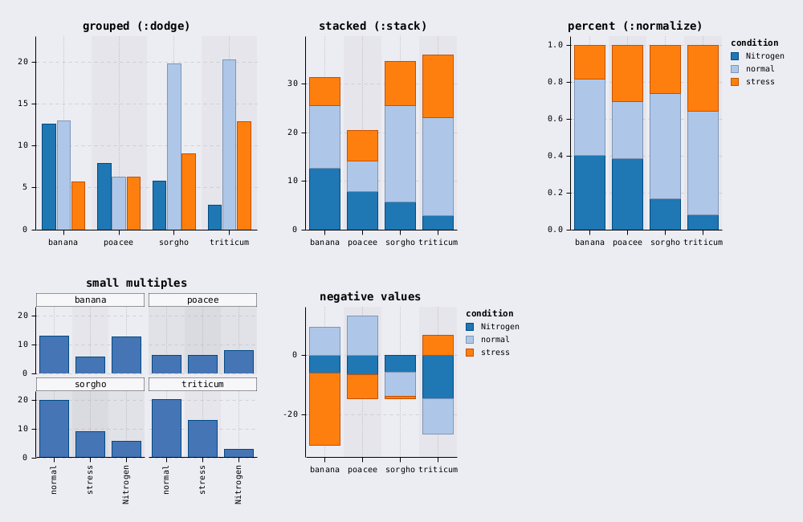
35.1.2 Likert scale
Survey answers as diverging stacked bars (seeded counts): disagreement to the left of 0, agreement to the right, the neutral answers split half to each side (two :groups of one colour). :negative-order :reverse stacks the negative side from the last answer, so the answers in their natural order diverge from the middle.
(def answers ["Strongly disagree" "Disagree" "Neutral" "Agree" "Strongly agree"])(def likert
(let [rng (r/rng :mersenne 3)]
(vec (for [q (range 1 6)
[i answer] (map-indexed vector answers)
:let [n (+ 5 (r/irandom rng 40))
sign ({0 -1.0 1 -1.0 3 1.0 4 1.0} i)]
row (if sign
[{:question (str "Q" q) :answer answer :side "" :count (* sign n)}]
;; the neutral answer: half on each side, two groups of one colour
[{:question (str "Q" q) :answer answer :side "-" :count (* -0.5 n)}
{:question (str "Q" q) :answer answer :side "+" :count (* 0.5 n)}])]
row))))| question | answer | side | count |
|---|---|---|---|
| Q1 | Strongly disagree | -6.0 | |
| Q1 | Disagree | -14.0 | |
| Q1 | Neutral | - | -7.5 |
| Q1 | Neutral | + | 7.5 |
| Q1 | Agree | 25.0 | |
| Q1 | Strongly agree | 18.0 | |
| Q2 | Strongly disagree | -6.0 | |
| Q2 | Disagree | -8.0 | |
| Q2 | Neutral | - | -20.0 |
| Q2 | Neutral | + | 20.0 |
| Q2 | Agree | 22.0 | |
| Q2 | Strongly agree | 9.0 | |
| Q3 | Strongly disagree | -9.0 | |
| Q3 | Disagree | -5.0 | |
| Q3 | Neutral | - | -16.5 |
| Q3 | Neutral | + | 16.5 |
| Q3 | Agree | 35.0 | |
| Q3 | Strongly agree | 31.0 | |
| Q4 | Strongly disagree | -14.0 | |
| Q4 | Disagree | -38.0 | |
| Q4 | Neutral | - | -16.5 |
| Q4 | Neutral | + | 16.5 |
| Q4 | Agree | 37.0 | |
| Q4 | Strongly agree | 29.0 | |
| Q5 | Strongly disagree | -24.0 | |
| Q5 | Disagree | -41.0 | |
| Q5 | Neutral | - | -5.0 |
| Q5 | Neutral | + | 5.0 |
| Q5 | Agree | 33.0 | |
| Q5 | Strongly agree | 21.0 |
Source: R Graph Gallery - Grouped and Stacked barplot (the Likert package).
(plot/render-image
{:data likert :mapping {:x :count :y :question :color :answer :group :side}
:scales {:color {:domain answers
:range {"Strongly disagree" [178 24 43] "Disagree" [239 138 98] "Neutral" [200 200 200]
"Agree" [103 169 207] "Strongly agree" [33 102 172]}}
:x {:formatter #(str (long (m/abs (double %))))}}
:charts [(chart/bar {:position :stack :negative-order :reverse})]
:labels {:title "Five questions, five answers" :x "answers" :y nil}}
{:width 800 :height 380})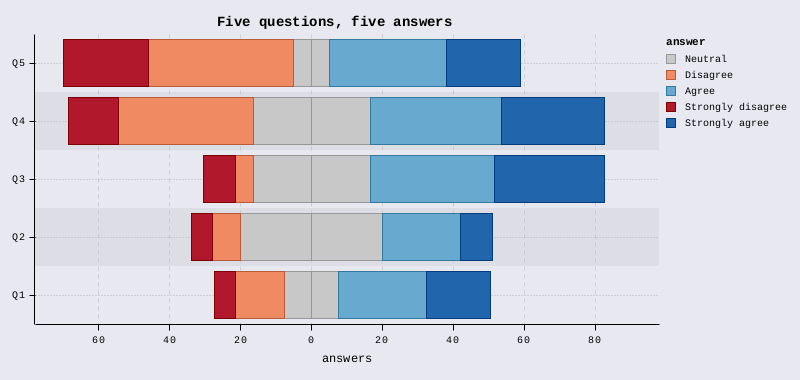
35.2 Treemap
Nested rectangles, areas proportional to the value: the world’s population by region, subregion and country.
35.2.1 Basic, groups and subgroups
One level (regions) and three (regions → subregions → countries); treemap :gap frames the groups, :stroke-color outlines the cells, a theme palette recolours the regions.
Source: R Graph Gallery - Treemap; data-to-viz - Treemap (1, 2). Data: World population by region, subregion and country, data-to-viz example dataset 11_SevCatOneNumNestedOneObsPerGroup (Yan Holtz; Wikipedia); licence: MIT (data_to_viz repository).
(plot/render-image
(plot/arrange
[{:data world :mapping {:value :population :hierarchy [:region]} :charts [(chart/treemap)]
:labels {:title "regions"}}
{:data world :mapping {:value :population :hierarchy [:region :subregion :country]}
:theme {:palette {:color :set2}}
:charts [(chart/treemap {:gap 4 :stroke-color [60 60 60]})]
:labels {:title "regions, subregions, countries (:set2, :gap 4)"}}]
{:columns 2 :widths [1 2]})
{:width 1000 :height 520})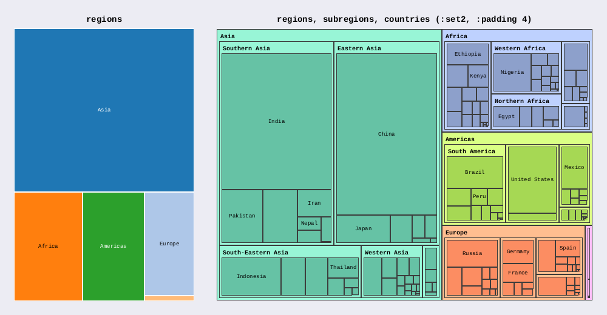
35.2.2 Annotated treemap
Label functions (:leaf-labels, :group-labels) get the node’s name, value, depth and shares: the countries with their population in millions.
Source: R Graph Gallery - Treemap (annotations, labels and colors). Data: World population by region, subregion and country, data-to-viz example dataset 11_SevCatOneNumNestedOneObsPerGroup (Yan Holtz; Wikipedia); licence: MIT (data_to_viz repository).
(plot/render-image
{:data world :mapping {:value :population :hierarchy [:region :country]}
:charts [(chart/treemap {:leaf-labels #(format "%s\n%.0f M" (:name %) (/ (double (:value %)) 1e6))
:group-labels #(format "%s - %.1f%%" (:name %) (* 100.0 (double (:share %))))})]
:labels {:title "World population (millions)"}}
{:width 1000 :height 700})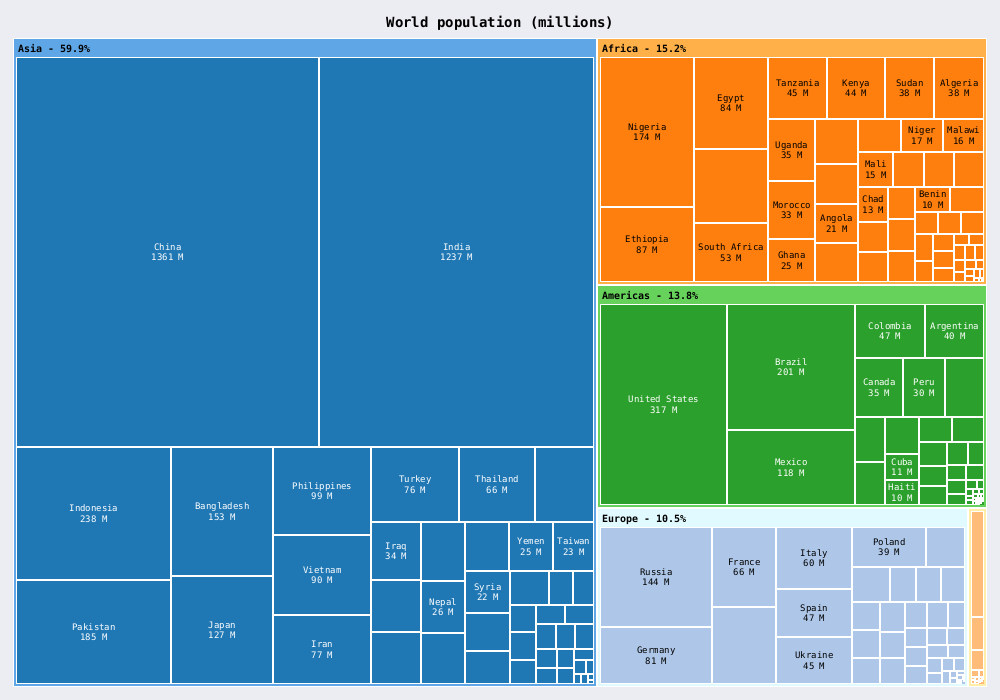
35.3 Donut
A ring of stacked shares: the regions’ populations around a hole (:inner - the hole’s radius as a fraction).
35.3.1 Basic, labels, ring thickness
Source: R Graph Gallery - Donut chart; data-to-viz - Donut (1, 2). Data: World population by region, subregion and country, data-to-viz example dataset 11_SevCatOneNumNestedOneObsPerGroup (Yan Holtz; Wikipedia); licence: MIT (data_to_viz repository).
(plot/render-image
(plot/arrange
(vec (for [inner [0.3 0.7]]
(assoc pie-base
:coord {:kind :polar :inner inner}
:scales {:x {:axis false}}
:charts [(chart/bar {:position :stack :width 1.0 :value-label percent-label})]
:labels {:title (str ":inner " inner) :x nil :y nil})))
{:columns 2})
{:width 1000 :height 450})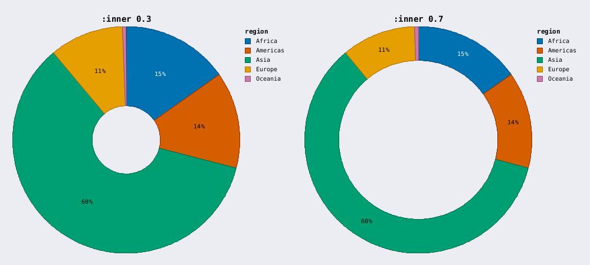
35.3.2 Half donut
:span 180 from :start -90: the circle shrinks to a half and fits its panel; outer labels name the parts.
Source: data-to-viz - Donut (variations). Data: World population by region, subregion and country, data-to-viz example dataset 11_SevCatOneNumNestedOneObsPerGroup (Yan Holtz; Wikipedia); licence: MIT (data_to_viz repository).
(plot/render-image
(assoc pie-base
:coord {:kind :polar :inner 0.5 :span 180 :start -90}
:legend false
:charts [(chart/bar {:position :stack :width 1.0 :value-label share-label :label-position :outer})]
:labels {:title "World population by region" :x nil :y nil})
{:width 800 :height 420})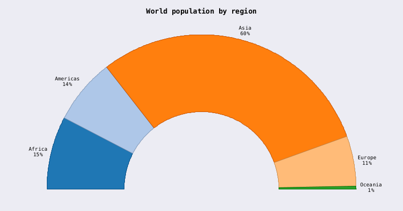
35.4 Pie
A donut without its hole. data-to-viz: angles are hard to compare - see the caveat at the end.
35.4.1 Basic, colours, a clean pie
The default pie shows its value axis around the circle - the cumulative population, here in billions; a palette recolours it; :axis false cleans it up.
Source: R Graph Gallery - Pie chart. Data: World population by region, subregion and country, data-to-viz example dataset 11_SevCatOneNumNestedOneObsPerGroup (Yan Holtz; Wikipedia); licence: MIT (data_to_viz repository).
(plot/render-image
(plot/arrange
[(assoc pie-base :legend false :scales {:x {:formatter #(format "%.0fB" (/ (double %) 1e9))}}
:charts [(chart/bar {:position :stack :width 1.0})] :labels {:title "default (axis in billions)" :x nil :y nil})
(assoc pie-base :theme {:palette {:color :MetBrewer/Archambault}} :legend false
:scales {:x {:formatter #(format "%.0fB" (/ (double %) 1e9))}}
:charts [(chart/bar {:position :stack :width 1.0})] :labels {:title ":MetBrewer/Archambault" :x nil :y nil})
(assoc pie-base :scales {:x {:axis false}} :legend false
:charts [(chart/bar {:position :stack :width 1.0 :stroke-color :white :stroke-width 1})]
:labels {:title "clean" :x nil :y nil})]
{:columns 3})
{:width 1000 :height 380})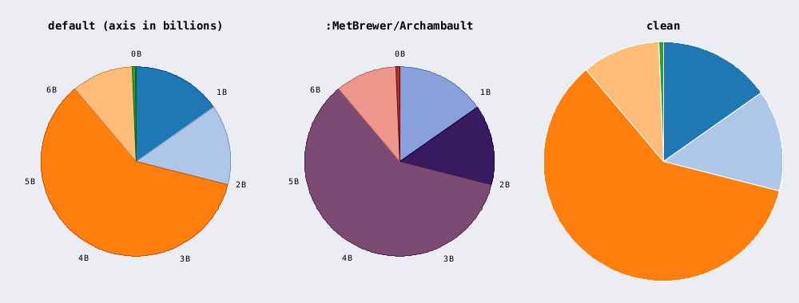
35.4.2 Slice labels
Label functions get each slice’s value, count and share: shares inside the slices, or names and shares outside with leader lines (:label-position :outer - the angle axis gives way, the circle makes room).
Source: R Graph Gallery - Pie chart (labels). Data: World population by region, subregion and country, data-to-viz example dataset 11_SevCatOneNumNestedOneObsPerGroup (Yan Holtz; Wikipedia); licence: MIT (data_to_viz repository).
(plot/render-image
(plot/arrange
[(assoc pie-base :scales {:x {:axis false}}
:charts [(chart/bar {:position :stack :width 1.0 :value-label percent-label})]
:labels {:title "inside" :x nil :y nil})
(assoc pie-base :legend false
:charts [(chart/bar {:position :stack :width 1.0 :value-label share-label :label-position :outer
:label-leader true})]
:labels {:title "outside, with leaders" :x nil :y nil})]
{:columns 2})
{:width 1000 :height 480})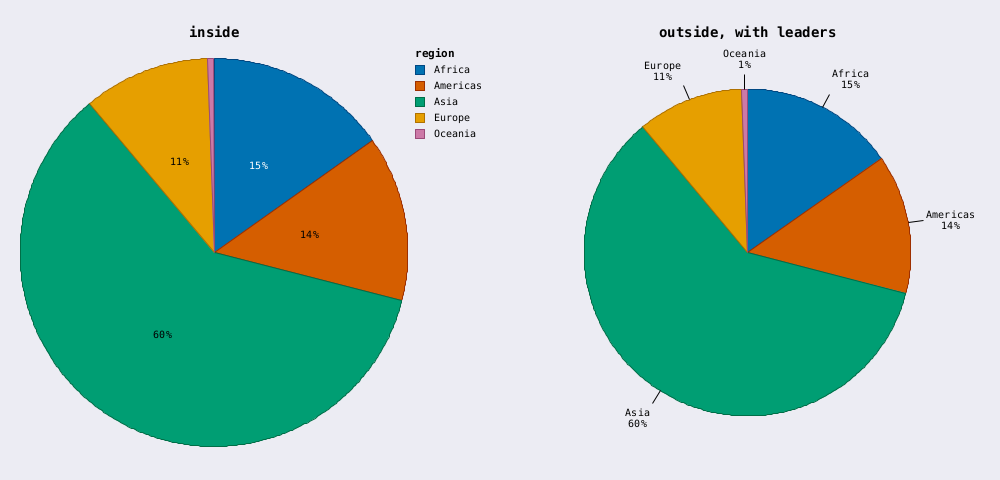
35.5 Circle packing
Circles with areas proportional to the value, nested in their groups’ enclosing circles - a group’s area isn’t proportional to its value (packing leaves gaps), compare circles within a group.
35.5.1 One level
Europe’s countries: a circle each (the palette’s colours repeat - they only tell neighbours apart); leaves coloured by their subregion; wider gaps (pack :gap, pixels; :leaf-labels false hides the names).
Source: R Graph Gallery - Circular packing; data-to-viz - Circular packing (1, 2). Data: World population by region, subregion and country, data-to-viz example dataset 11_SevCatOneNumNestedOneObsPerGroup (Yan Holtz; Wikipedia); licence: MIT (data_to_viz repository).
(plot/render-image
(plot/arrange
[{:data europe :mapping {:value :population :hierarchy [:country]} :legend false
:charts [(chart/pack)] :labels {:title "basic"}}
{:data europe :mapping {:value :population :hierarchy [:country] :color :subregion}
:charts [(chart/pack {:gap 6 :leaf-labels false})] :labels {:title "by subregion, :gap 6"}}]
{:columns 2})
{:width 1000 :height 480})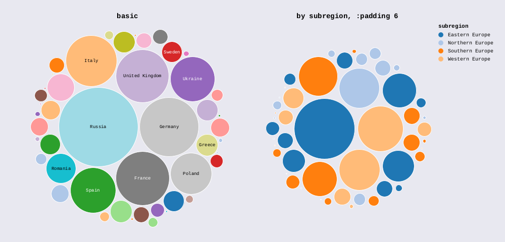
35.5.2 Several levels
Regions → subregions → countries: the regions’ colours lighter at every level, group names under their circles’ tops.
Source: R Graph Gallery - Circular packing (several levels). Data: World population by region, subregion and country, data-to-viz example dataset 11_SevCatOneNumNestedOneObsPerGroup (Yan Holtz; Wikipedia); licence: MIT (data_to_viz repository).
(plot/render-image
{:data world :mapping {:value :population :hierarchy [:region :subregion :country]}
:charts [(chart/pack)] :labels {:title "Regions, subregions, countries"}}
{:width 1000 :height 800})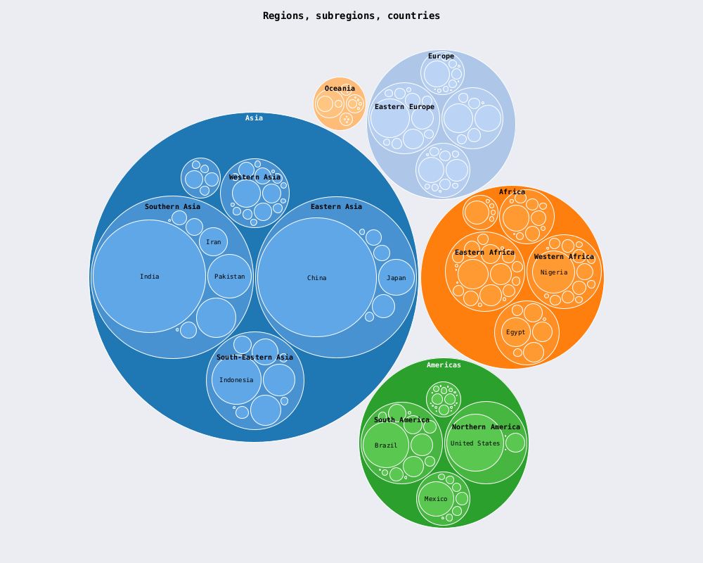
Hiding the regions (:hidden-levels #{1}) leaves the subregions floating - the layout stays the same.
Source: R Graph Gallery - Circular packing (hide some levels). Data: World population by region, subregion and country, data-to-viz example dataset 11_SevCatOneNumNestedOneObsPerGroup (Yan Holtz; Wikipedia); licence: MIT (data_to_viz repository).
(plot/render-image
{:data world :mapping {:value :population :hierarchy [:region :subregion :country]}
:charts [(chart/pack {:hidden-levels #{1}})] :labels {:title "Regions hidden"}}
{:width 1000 :height 800})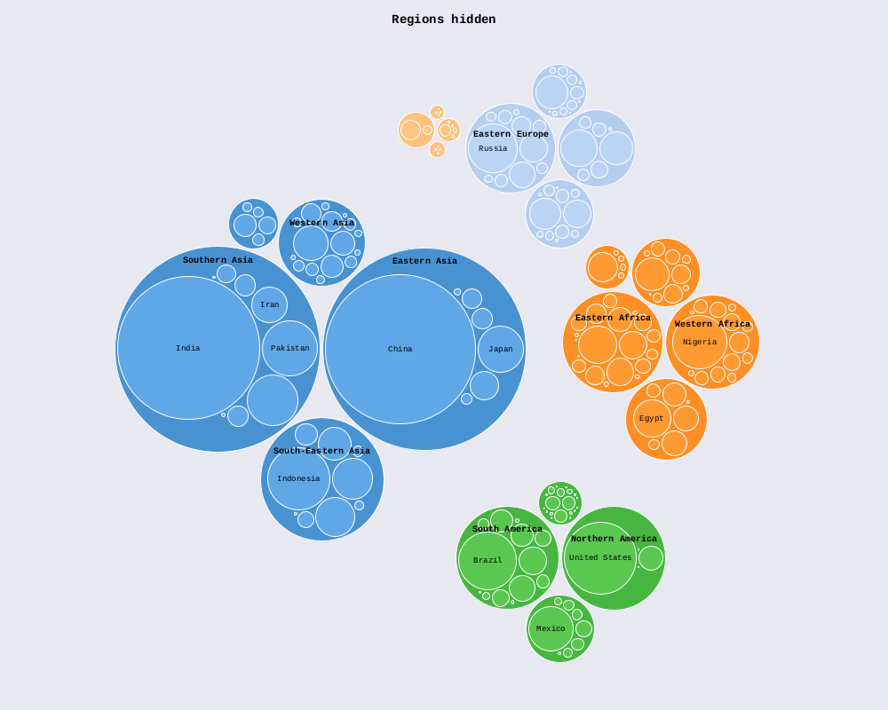
35.6 Sunburst
The hierarchy as rings: a partition (an icicle in cartesian coordinates) under polar coordinates - regions inside, subregions, then countries outward.
Source: data-to-viz - Sunburst. Data: World population by region, subregion and country, data-to-viz example dataset 11_SevCatOneNumNestedOneObsPerGroup (Yan Holtz; Wikipedia); licence: MIT (data_to_viz repository).
(plot/render-image
(plot/arrange
[{:data world :mapping {:value :population :hierarchy [:region :subregion :country]} :coord {:kind :polar :inner 0.15}
:charts [(chart/partition)] :labels {:title "sunburst"}}
{:data world :mapping {:value :population :hierarchy [:region :subregion]}
:charts [(chart/partition)] :labels {:title "icicle (two levels)"}}]
{:columns 2})
{:width 1000 :height 520})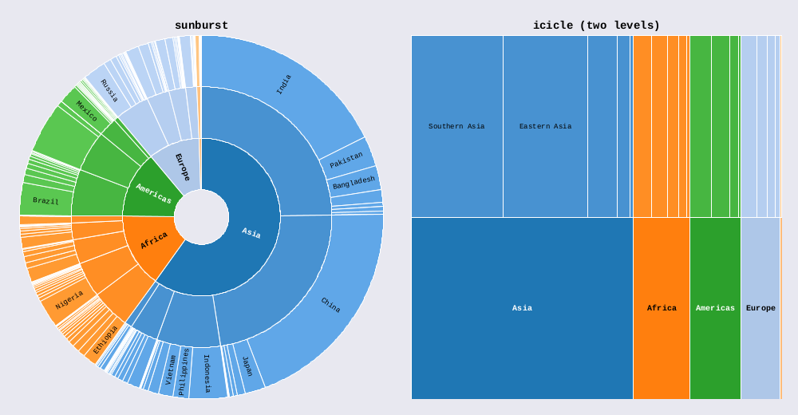
35.7 Waffle
A grid of cells: by default 10 × 10, a cell per percent of the whole (largest-remainder rounding keeps the total at 100).
35.7.1 Basic, shapes, colours, groups
The regions’ shares; circle cells (waffle :cell-shape, :gap - a fraction of a cell); a palette; subregions within each region (a facet per region, each region’s subregions in shades of its colour in the default palette - 22 subregions are more than its 14 colours).
Source: R Graph Gallery - Waffle chart. Data: World population by region, subregion and country, data-to-viz example dataset 11_SevCatOneNumNestedOneObsPerGroup (Yan Holtz; Wikipedia); licence: MIT (data_to_viz repository).
(plot/render-image
(plot/arrange
[{:data world :mapping {:color :region :value :population} :charts [(chart/waffle)] :labels {:title "regions"}}
{:data world :mapping {:color :region :value :population} :theme {:palette {:color :dark2}}
:charts [(chart/waffle {:cell-shape :circle :gap 0.15})] :labels {:title "circles, :dark2"}}]
{:columns 2})
{:width 1000 :height 400})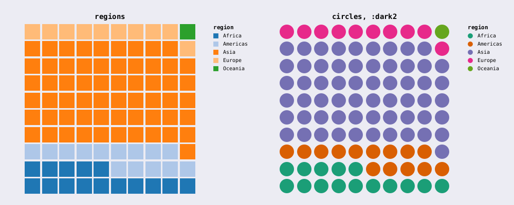
Source: R Graph Gallery - Waffle chart (groups and subgroups). Data: World population by region, subregion and country, data-to-viz example dataset 11_SevCatOneNumNestedOneObsPerGroup (Yan Holtz; Wikipedia); licence: MIT (data_to_viz repository).
(def subregion-colors
"Each region's subregions in shades of the region's colour in the default palette (darker to lighter)."
(into {} (for [[base [_ subregions]] (map vector theme/default-palette
(sort-by key (group-by :region world)))
:let [names (sort (distinct (map :subregion subregions)))]
[i subregion] (map-indexed vector names)]
[subregion (c/brighten base (- (* 0.7 (double i)) 1.0))])))(plot/render-image
{:data world :mapping {:color :subregion :value :population :facet :region}
:scales {:color {:range subregion-colors}}
:charts [(chart/waffle {:gap 0.15})]
:labels {:title "Subregions within each region"}}
{:width 1000 :height 520})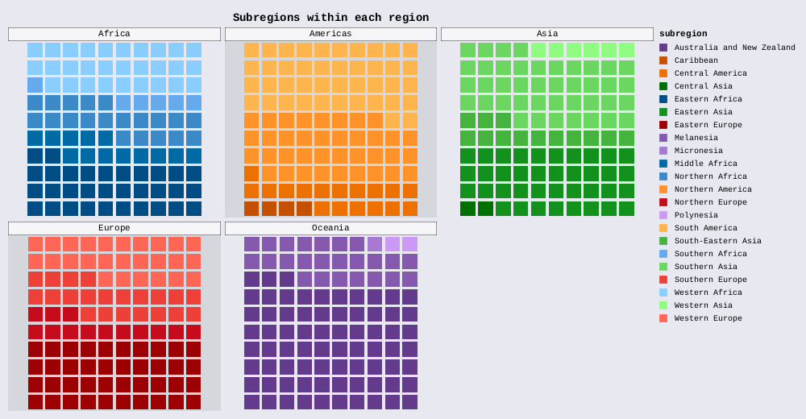
35.8 Venn diagram and UpSet
The words three French artists use in their songs: a word is in an artist’s set when it appears in their lyrics. data-to-viz: no more than three sets in a Venn diagram, a number in every region - the UpSet plot handles more.
35.8.1 Two and three sets
Two artists (the venn :sets): circle areas and the overlap proportional to the word counts. Three: the classic layout, counts and shares from a label function (:region-labels).
Source: R Graph Gallery - Venn diagram; data-to-viz - Venn diagram (1, 2). Data: Words in the songs of three French artists, data-to-viz example dataset 14_SeveralIndepLists (Yan Holtz); licence: MIT (data_to_viz repository).
(plot/render-image
(plot/arrange
[{:data words :mapping {:set :artist :item :word}
:charts [(chart/venn {:sets ["booba" "nekfeu"]})] :labels {:title "two artists"}}
{:data words :mapping {:set :artist :item :word}
:charts [(chart/venn {:region-labels #(format "%d\n%.0f%%" (:size %) (* 100.0 (double (:share %))))})]
:labels {:title "three artists"}}]
{:columns 2})
{:width 1000 :height 480})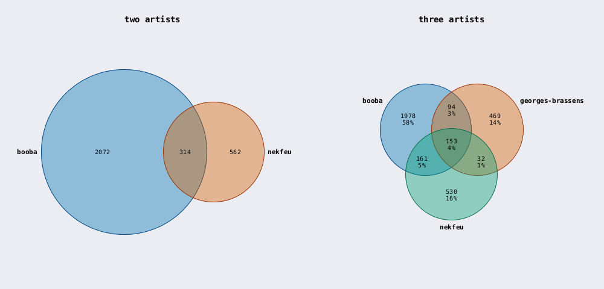
35.8.2 UpSet plot
Bars of the exact intersections (largest first) over a dot matrix of the sets in each: from cljplot2.data.sets/upset-rows and membership-rows.
Source: R Graph Gallery - Venn diagram (the UpSetR alternative). Data: Words in the songs of three French artists, data-to-viz example dataset 14_SeveralIndepLists (Yan Holtz); licence: MIT (data_to_viz repository).
(plot/render-image
(let [m {:set :artist :item :word}
dots (sets/membership-rows words m)]
(plot/arrange [{:data (sets/upset-rows words m) :mapping {:x :combination :y :size}
:scales {:x {:axis false}}
:charts [(chart/bar {:value-label true})] :labels {:title "Words shared by the artists" :x nil :y "words"}}
{:data dots :mapping {:x :combination :y :set}
:theme {:axis {:x {:label-rotation -45}}}
:charts [(chart/scatter {:size 12 :color [210 210 210]})
(chart/scatter {:data (filter :member dots) :size 12 :color :black})]
:labels {:x nil :y nil}}]
{:columns 1 :heights [3 2]}))
{:width 900 :height 650})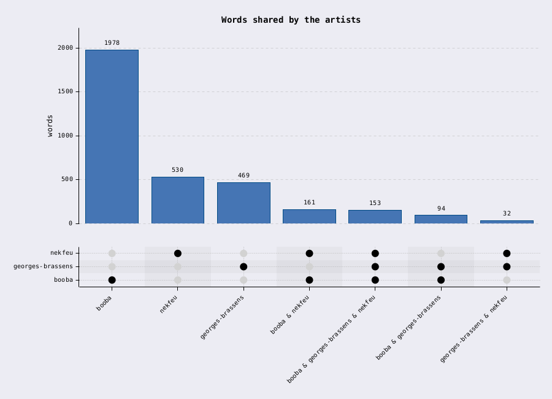
35.9 Caveats
35.9.1 The issue with pie charts
data-to-viz: three sets of five nearly equal values. As pies the differences hide in the angles; as bars they read at once. (3D pies, exploded slices and legends far from the slices make it worse - not drawn here.)
(def caveat-data
{"data 1" [17 18 20 22 24] "data 2" [20 18 21 20 20] "data 3" [24 23 21 19 18]})| data 1 | data 2 | data 3 |
|---|---|---|
| 17 | 20 | 24 |
| 18 | 18 | 23 |
| 20 | 21 | 21 |
| 22 | 20 | 19 |
| 24 | 20 | 18 |
(defn- caveat-rows [values] (mapv (fn [part v] {:part part :value v}) ["a" "b" "c" "d" "e"] values))#'use-cases.part-of-a-whole/caveat-rowsSource: data-to-viz - The issue with pie chart.
(plot/render-image
(plot/arrange
(vec (concat
(for [[title values] caveat-data]
{:data (caveat-rows values) :mapping {:x :value :color :part} :coord {:kind :polar} :scales {:x {:axis false}}
:legend false :charts [(chart/bar {:position :stack :width 1.0})] :labels {:title title :x nil :y nil}})
(for [[title values] caveat-data]
{:data (caveat-rows values) :mapping {:x :part :y :value :color :part} :legend false
:charts [(chart/bar)] :labels {:title title :x nil :y nil}})))
{:columns 3})
{:width 1000 :height 650})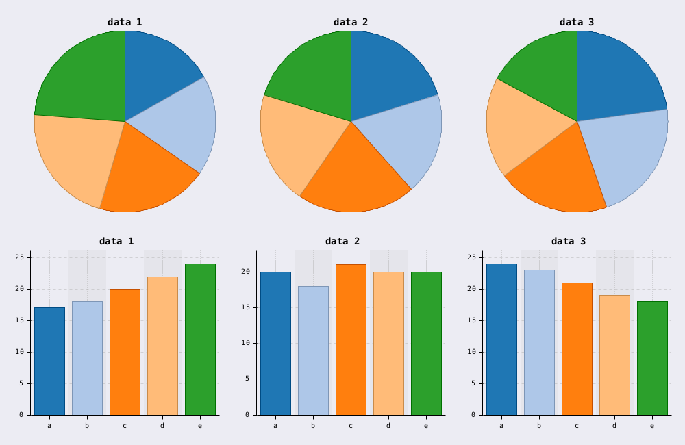
35.9.2 Other caveats
- Circle packing: only leaf areas follow the values - a group’s circle also holds the gaps between its children.
- Treemaps: label at most three levels; deeper ones get too small to read (data-to-viz).
- Sunbursts and donuts compare angles, as pies do; outer rings exaggerate the deeper levels (their arcs are longer for the same share).
source: notebooks/use_cases/part_of_a_whole.clj